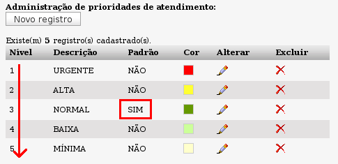

Prioridades de atendimento [admin -> Ocorrências -> Prioridades de atendimento (
a partir da versão 2.0RC5)]
Até a versão 2.0RC4.1, o OcoMon entendia o termo “prioridade” como o "tempo de resposta" associado a um chamado em função do departamento de origem do mesmo (a função citada ainda existe porém agora com a nomenclatura:
Níveis de Resposta). A partir da versão 2.0RC5, foi dado um novo entendimento ao termo "prioridade" dentro do sistema. A prioridade de cada chamado serve para a ordenação dos mesmos na fila de atendimento, independentemente dos tempos de resposta definidos para cada chamado. Essa mudança permite o controle da fila de atendimento em função das prioridades atribuídas aos chamados na sua abertura ou edição.
Aqui serão criados os tipos de prioridades de atendimento que serão utilizados para a classificação dos chamados na tela que exibe a fila de atendimento dos chamados.
Nessa tela, no caso de uma atualização a partir de versões anteriores à versão 2.0RC5, será exibido um link para atualização de todos os chamados já existentes no sistema (caso existam) para que os mesmos sejam associados à prioridade padrão do sistema. Essa prioridade padrão deverá ser definida durante o cadastro ou edição das prioridades, como veremos a seguir:
Cadastro de prioridades:
- Campo Descrição: é o rótulo da prioridade. Descrição textual atribuída à prioridade. Ex: Urgente, normal, baixa, etc..
- Caixa "Padrão": ao marcar essa caixa para alguma prioridade criada, você estará definindo a mesma como padrão do sistema, dessa forma, ao abrir chamados o sistema já trará o campo prioridade selecionado com a prioridade padrão. Apenas uma prioridade é aceita como padrão e essa será a mais recente definida como tal.
- Campo Nível: aqui é selecionado o nível da prioridade. Valores menores significam maior precedência para a prioridade. Ou seja, a prioridade mais alta possível é a de nível 1(um). Nessa seleção, estarão disponíveis apenas os nívels ainda não atribuídos às prioridades já cadastradas no sistema. O sistema vem pré-configurado com 10 (dez) níveis possíveis.
- Campo Cor: é possível atribuir uma cor para cada prioridade criada. Essa cor facilitará o entendimento da prioridade de cada chamado na tela de exibição da fila de chamados no sistema. A cor pode ser selecionada dentre as disponíveis na paleta de cores ou digitada em notação HTML (hexadecimal) diretamente no campo de texto.

Exemplo de tela com prioridades configuradas. A prioridade mais alta é a de nível 1 e a prioridade padrão do sistema é "NORMAL".
A definição de prioridade de um chamado não terá relação com o SLA (tanto de resposta quanto de solução) definido para este, e funcionará apenas como uma forma de organizar a ordem de atendimento dos chamados na fila de atendimento.
A exclusão de qualquer prioridade definida no sistema só será possível se não existir nenhum chamado associado à mesma.